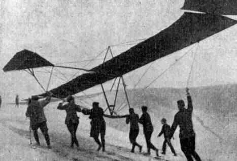
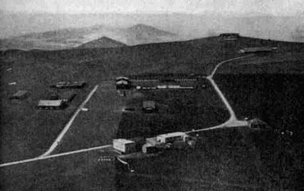

|
Inicio
Bibliografía
Noticias
Hangar
Actividades
Cursos
Comisión
Fotos
Videos
Ubicación
Contáctenos
Links
|
|
Manual del Vuelo a Vela
Wolf Hirth - 1942
HISTORIA DEL VUELO A VELA
por GEORG BRÜTTING
3º Sección
Hasta 1926 todas las marcas conseguidas lo fueron con el vuelo a vela estático sobre las
ascendencias orográficas, con cuya energía se llevaron las marcas, en el año 1925, a
24,4 km., la de distancia por Nehring, en la Crimea rusa y, en el mismo lugar, la de
duración, a 12,07 horas por Schulz. Pero se comprende que si se quería que el vuelo a
vela llegase a superar esas marcas no debía quedar limitado a tener efecto solamente en
las ascendencias orográficas, sino que había de abrírsele el camino libre de la
atmósfera sobre las llanuras, para que ese vuelo pudiese tener la expansión necesaria:
Se deseaba y se debía poder despegarse de las laderas. El vuelo de Nehring a Milseburg y
el de Kegel, hecho involuntariamente en un frente tormentoso, con un recorrido de 55,2
km., en el concurso de 1926, mostraron nuevas posibilidades que ya habían sido señaladas
por el profesor Georgii en 1923. A partir de aquí, se empezaron los trabajos a fondo de
investigación sobre el vuelo a vela, los cuales abrieron el camino para establecer los
principios meteorológicos fundamentales del vuelo sin motor que habían de conducir a los
vuelos de marca, haciendo posible la utilización de los resultados del conocimiento del
estado del tiempo, que fue la causa de la continua y asombrosa progresión de las marcas
año tras año. Los conocimientos logrados en 1926 y 1927 que fueron interpretados, desde
luego, por algunos de los propulsores que se destacaron entre los pilotos, pasaron en
pocos años a ser del dominio general de todos ellos.
La trinidad hombre, aparato y meteorología elevó
continuamente las marcas del vuelo a vela: tan pronto era el piloto el que llevaba la
dirección, como el constructor, o el meteorólogo, y uno de ellos hacía de guía para
los avances de los otros. En estos primeros años de la segunda gran etapa del vuelo sin
motor, se destacaron algunos pilotos rompiendo la uniformidad del conjunto; siendo los
más notables los dos maestros Nehring y Schulz, cuyos merecimientos para el vuelo sin
motor fueron de importancia bastante para constituir verdaderas directrices generales y se
unieron así, en forma imperecedera, con la historia del vuelo a vela. Después surge
Kronfeld y, desde 1931, sobresalen del grupo de pilotos de velero: Günther Groenhoff y
Wolf Hirth; también en 1933, con Wolf Hirth, están Peter Riedel, Heini Dittmar, Hanna
Reistch; en 1934 aparecen Ludwig Hofmann, Kurt Schmidt, Späte y otros. Kronfeld,
Groenhoff, Hirth, Riedel y Dittmar fueron distinguidos con la Copa Hindenburg, creada en
1929, y en 1935 Hofmann, con el nuevo "Premio para el vuelo a vela, Adolf Hitler".

Fig. 5. Ferdinand Schulz construyó él mismo, en
1922 un "Besentielkiste",
con el que consiguió la primera marca mundial de duración en Rossitten
El vuelo de Kegel fue el primero que se hizo independientemente del terreno, sólo con el apoyo de
la ascendencia de la atmósfera libre y, con ello, se inició la evolución hacia los
vuelos, que más tarde se ejecutaron con apoyo en las nubes y en los frentes tormentosos;
y, por otro lado, tenían importancia por su significación para el futuro los vuelos de
Nehring con vientos flojos, pues realizados durante horas y 3 a 4 m/s o, solamente con 1
m/s, de velocidad de viento, demostraron la existencia de ascendencias térmicas cuya
investigación se llevó a cabo en Darmstadt, donde bajo la dirección del profesor
Georgii se había establecido
un Instituto, al cual el vuelo sin motor jamás agradecerá bastante sus continuos
trabajos de investigación. Se comprende que hasta 1928 no se hubiesen realizado vuelos a
vela con apoyo térmico, porque se desconocían la intensidad y las leyes de distribución
de las ascendencias de ese origen; después, por las investigaciones hechas en Darmstadt,
empleando aviones de motor, globos pilotos equilibrados y, por fin, veleros, se llegó a
poder volar a vela con
apoyo en las nubes, con lo cual se abrió al vuelo sin
motor una nueva vía completamente diferente de lo que hasta entonces se había hecho y se
hizo posible un nuevo método para conseguir mejores marcas. Se entiende por vuelo a vela
con apoyo nuboso el ejecutado sobre la ascendencia térmica originada por las masas de
aire, relativamente calientes y húmedas, elevadas por encima de su altura de
condensación y que dan lugar a la formación de nubes del tipo cúmulos. También se
experimentó el vuelo con
apoyo en los frentes, el cual aprovecha las violentas
ascendencias de masas de aire caliente levantadas delante de las turbonadas por la
irrupción de aire frío de procedencia polar. Al lado de todo esto, se continuaba el
estudio de las simples ascendencias térmicas, que eran utilizadas con eficacia en el
progreso del vuelo a vela, como ocurrió en los vuelos de Hirth realizados en América en
el otoño de 1930: entonces Hirth ganó altura imitando el girar, mientras se elevan, de
las aves de rapiña, cuyo método, a partir de aquí, pasó a ser del dominio general de
todos los pilotos de velero y sin el cual hoy no se concibe un vuelo a vela de distancia,
en el que es preciso ganar siempre altura para luego ir convirtiéndola en distancia.
Sin duda que esta clase de
ascendencias junto con el aprovechamiento de las de las nubes y los frentes fueron la
causa de las marcas conseguidas en 1928 a 1930, aun sin que los pilotos se diesen mucha
cuenta de ello; así, por ejemplo, pudo Edgar Dittmar conseguir su marca mundial de
altura, de 775 m., en 1928, partiendo de la ascendencia de ladera y atravesando una pompa
de aire térmica, pues la ascendencia orográfica de la Wasserkuppe no es utilizable por
encima de los 400 m. sobre el punto de salida. Nehring mismo mejoró varias veces en este
año las marcas mundiales de altura y distancia, pues llegó finalmente en 1929 a los 1209
m. de altura sobre el punto de salida y a los 72,3 km. de recorrido con apoyo en ruta
orográfica.
En el mismo año llevó a cabo el vienés Robert Kronfeld
el primer vuelo sin motor de 100 km., pues consiguió en mayo 102 km. de vuelo, con apoyo
simplemente orográfico, en los montes del bosque de Teutoburg, y todavía mejoró esta
marca en 1930 volando desde la Wasserkuppe hacia el Este, 164 km. hasta Marktredwitz
llevando la marca de altura a los 2650 m.; estas grandes marcas de Kronfeld fueron
debidas, además del aprovechamiento del apoyo orográfico, especialmente al apoyo nuboso
y, en parte también, al apoyo en los frentes, los cuales determinaron, en el año
siguiente, uno de los más importantes vuelos de la historia del vuelo sin motor.
En 1930 causó justificada sensación con sus vuelos un
joven de Francfort, que en 1931, estando en posesión de todos los distintivos de piloto,
llegaba a ser el mejor piloto de velero del mundo: Günther Groenhoff.
Casi en cada mes del año sorprendía al gran público con
sus grandiosas y en su mayor parte primeras marcas de vuelo: así pilotó por primera vez
el avión sin cola que había construido Alexander Lippisch y que después de la muerte de
Groenhoff quedó largo tiempo huérfano, hasta que en los últimos años se encontraron
nuevos pilotos con Dittmar y especialmente con Wiegmayer.
En abril llevó a cabo con gran éxito por primera vez en
Alemania el nuevo método de envuelo de velero por remolque con avión, método que se
desarrolló después en ese país y que en otros capítulos de esta obra se estudia con
todo detalle. Partiendo con ese método de envuelo, hizo 100 km. de recorrido total y
aterrizó en Bühl, en la Selva Negra. Pocos días después llevaba a cabo un vuelo
empezado con ese método y que fue todavía de resultado mucho mayor, pues había de
quedar hasta hoy como modelo de ejecución: estando en Munich, había sido remolcado por
su amigo Peter Riedel hasta los 450 m. de altura, en la que se soltó y hallándose
realizando tanteos de apoyo térmico y nuboso durante dos horas, consiguió engancharse a
un frente, con el que voló 272 km. hasta Kaaden, en Checoslovaquia, lo que era una marca
de distancia que no fue superada en tres años y que representa todavía hoy una de las
grandes marcas de vuelo con apoyo en los frentes.
Más tarde hizo el primer vuelo en el valle de la Jungfrau
y, después de algunas tentativas, consiguió llegar a Berna.
Antes del concurso estaba ya otra vez el nombre de
Kronfeld en todas las bocas, a consecuencia de haber sido el primer piloto de velero que
había atravesado el Canal de la Mancha en las dos direcciones, envolando las dos veces
por remolque y con vuelos en planeo de 5 horas de duración, alcanzando el gran premio que
poco antes habla instituido el DailyMail.
El concurso mismo trajo resultados sorprendentes, entre
los cuales hay que citar los vuelos, en frente tormentoso, de la pareja Groenhoff y Hirth
que llevaron al uno hasta Magdeburg, con un
recorrido de 220 km., y al otro hasta Halle, con 175 km. de distancia. Ambos habían ya
realizado el difícil vuelo, con objetivo fijado, del Rhön, llegando al Oechsen a 35 km.,
habiendo alcanzado en su ejecución respectivamente, 1500 y 1000 m. de altura.
Sin embargo, los resultados de más importancia del
concurso fueron las marcas de duración en vuelo térmico y, aun más, las de distancia de
Groenhoff, Kronfeld y Hirth, que eran alcanzadas por primera vez en Alemania, después
que, en otoño de l930, habían contribuido al progreso de tales vuelos los realizados por
Hirth en América, sobre terreno libre en Elmira y sobre Nueva York. También pudo añadir a sus éxitos el vuelo más
largo de apoyo térmico que le llevó del Rhön al Rhin. Este resultado pudo repetirlo en
el "Concurso de térmica" de 1935 y fue conseguido además por sus discípulos. No hay
que olvidar a Otto Fuchs, de Darmstadt, el piloto del Akaflieg Darmstadt que hizo también
notables vuelos térmicos en la primavera de 1931. Finalmente, Groenhoff cerró la lista
de sus éxitos en este año ganando el premio BZ (BZ es la abreviatura de Berliner
Zeitung (diario de Berlín - N. Del T.), que
se habla creado para el primer vuelo en avión sin cola, desde la Wasserkuppe a Berlín.
El 1931 fue, lo mismo que el 1922, de la mayor importancia para el vuelo a vela, pues le
hizo tener por segunda vez resonancia mundial, ya que las sorprendentes marcas que se
obtuvieron dieron un nuevo impulso a la afición en Alemania, que se extendió a muchos
países. En todas partes se organizaron nuevos grupos y se obtuvieron grandes resultados,
tanto en número como en calidad, atribuibles al nuevo método de envuelo por remolque,
que en dicho año fue usado por primera vez. Los nuevos métodos de envuelo por remolque,
con automóvil, torno y avión, emanciparon al vuelo sin motor de las exigencias de
terreno y le hicieron posible también en las llanuras, con lo que se amplió notablemente
su radio de acción en la enseñanza y entrenamiento para concursos, convirtiendo así el
vuelo sin motor en un verdadero deporte popular. Sin el método de remolque para el
envuelo no se habría podido pensar en la expansión de la afición al vuelo a vela en los
años venideros, que hasta habría llegado a ser imposible de realizar, como igualmente
sin ese procedimiento no se habrían podido utilizar las "invisibles" ascendencias
térmicas, y el vuelo a vela en días con cielo sin nubes no habría tenido el rápido
progreso que tuvo. Además de todo esto, se obtuvo también la posibilidad de utilizar,
para la partida de vuelos a vela, cualquier aeródromo, lo que hasta entonces sólo había
sido posible desde terrenos de condiciones especiales. Otra novedad técnica, a la que no
hay duda que debe atribuirse buena parte de los éxitos, es la de haberse introducido el
uso y construcción de instrumentos de a bordo.
La brújula, el tubo de Pitot, el altímetro y el
variómetro fueron los primeros instrumentos usados, entre lo cuales el variómetro tenía
la sorprendente cualidad de que revelaba la existencia de zonas de aire ascendente, así
que el feliz poseedor de tal auxiliar podía ganar gran altura en poco tiempo, ventaja que
entonces no la tenía otro piloto. En el transcurso del año se completó el empleo de
tales medios con el tablero de instrumentos, encontrándose también el modo más adecuado
de su instalación en el aparato, de modo que hoy ningún velero de concurso está
desprovisto de un tablero de esos indicadores, más o menos completo.
Sin embargo, lo característico del año 1931 está en el
paso adelante que supone para la técnica del vuelo a vela el haberse empleado por primera
vez, de un modo consciente y sistemático, el apoyo sobre las ascendencias puramente
térmicas, hasta con cielo sin nubes, como medio más importante para la ejecución de los
vuelos de marca.
Después de los éxitos de Wolf Hirth en los Estados
Unidos y de algunos otros resultados análogos en la primavera de ese año, lo más
importante que tuvo el 12 Concurso fue el vuelo térmico, pues con él volaron Hirth y
Groenhoff en el mismo día distancias de 193 km. y 108 km. sin ningún apoyo orográfico y
sin enganche a un frente o a nubes y, en el último día, voló Kronfeld, con cielo sin
nubes y casi calma completa, 156 km. en recorrido libre; así, pues, desde 1931, la «
térmica » se convirtió en el gran manantial de energía para el vuelo a vela, cuya
utilización casi exclusiva ha dado lugar a todos los vuelos de marca registrados hasta
hoy.

Fig. 6. La Wasserkuppe, el histórico lugar de los reñidos concursos, tal como estaba en 1932
Los éxitos y resonancias del año 1931 hicieron también despertar fuera de Alemania la
afición al vuelo sin motor, a lo que contribuyeron igualmente las numerosas expediciones
de pilotos alemanes en 1930 y años sucesivos. Así el año 1931 terminó con otra gran
marca de un piloto no alemán. De América vino, en Nochebuena, la noticia de que Cocke en
su "Buho", después de varias tentativas, había volado entre el 17 y 18 de diciembre,
en Honolulú, casi 22 horas, con lo cual no sólo había superado en mucho la marca
mundial del alemán Ferdinand Schulz de 14 horas y 7 minutos, que ostentaba desde 1927,
sino que también borró las marcas de duración no oficiales de algunos otros pilotos.
Dinort, 14,43 horas, en Rossitten el 20 de octubre de 1929, y el americano Barstow que
había volado, sin verificación oficial, 15,13 horas el 30 de abril de 1930. En el
concurso del Rhön de 1932 fue otra vez en vanguardia Wolf Hirth con sus dos vuelos de
distancia de 145 y 160 km., a pesar de las desfavorables condiciones del tiempo. No menos
notables fueron los vuelos del piloto Mayer, de Aquisgrán, desgraciadamente muerto en una
caída poco después, el cual, con sus vuelos de 125 km. y 70 km. resultaba en segundo
lugar, así como igualmente dignos de mención fueron sus vuelos de altura con apoyo en
cúmulos, en los que una vez llegó a los 2150 m. sobre el punto de salida, mereciendo el
premio de altura y quedando inmediatamente detrás de la marca mundial de Kronfeld (fig.
6).
|